规定初始像素覆盖已通过独立数据验收，完整12步与物理安全未通过。Prescribed initial pixel coverage passes the independent DATA audit; full12-step and physical acceptance remain incomplete. Original1280×720; no edits/crop. Every image below is INITIAL, not micro1/final.
{"seed": 2, "proposal_id": 2532, "global_id": 25060, "family": 0}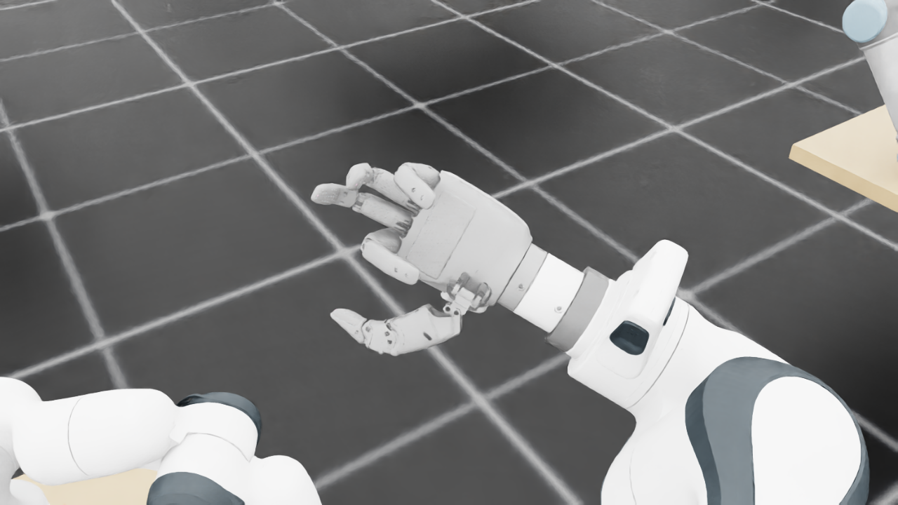
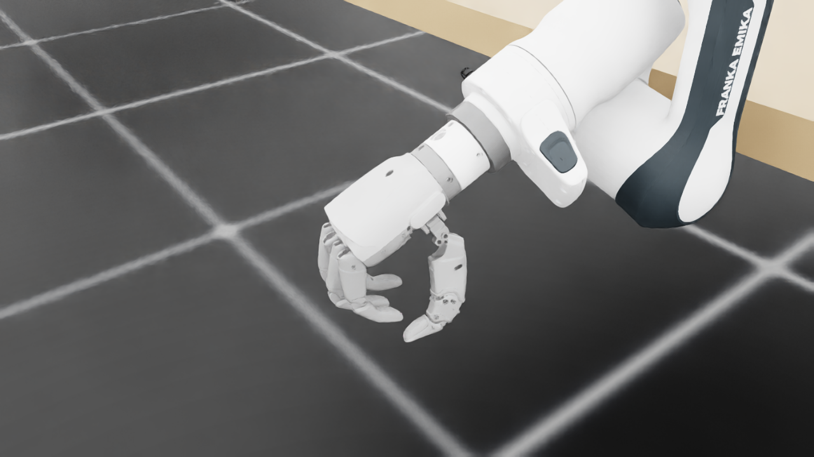
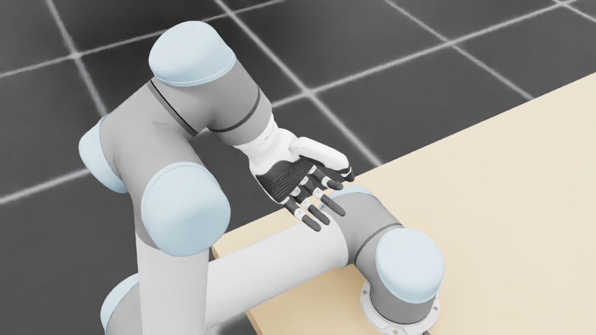
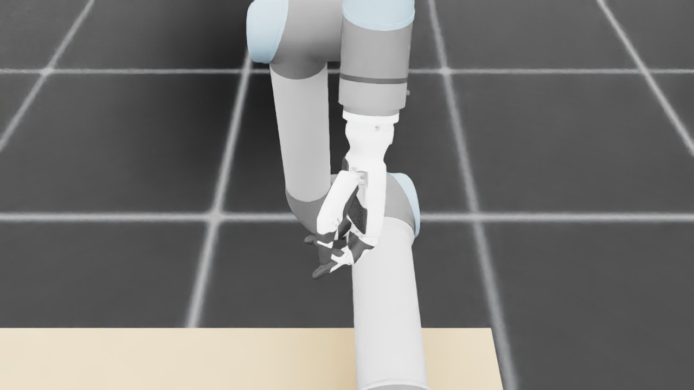
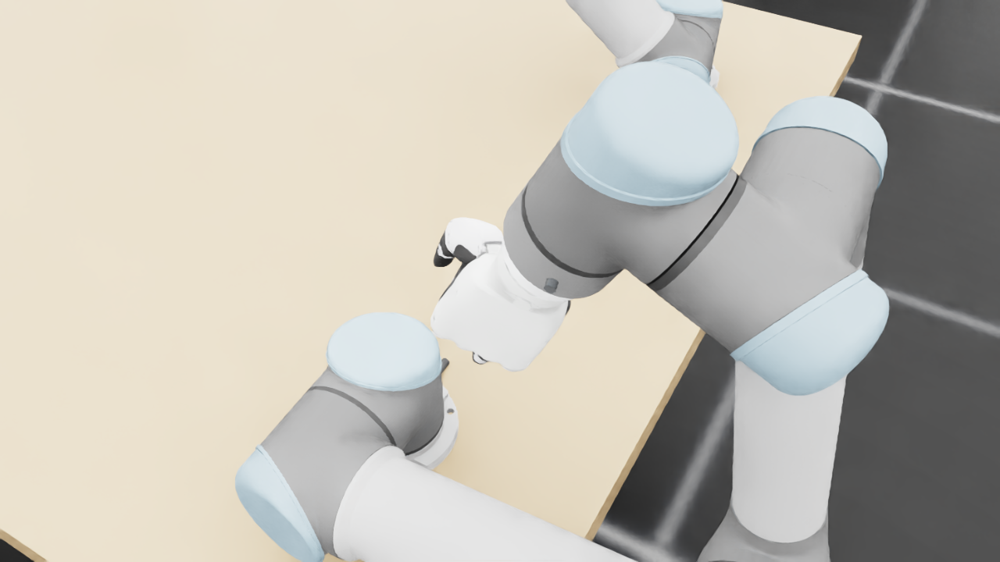
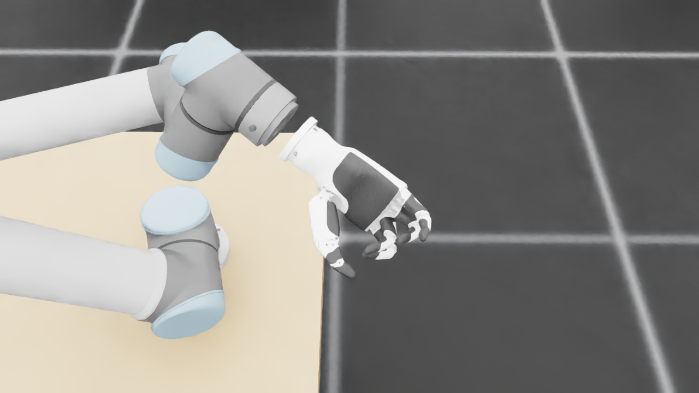
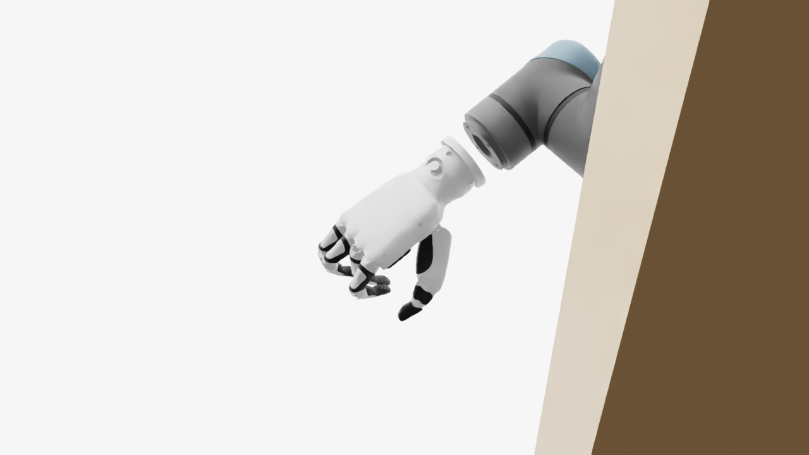
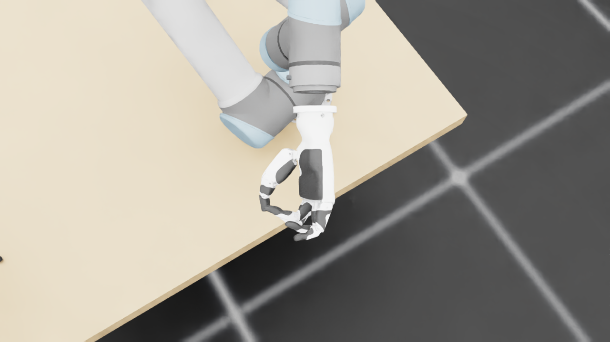
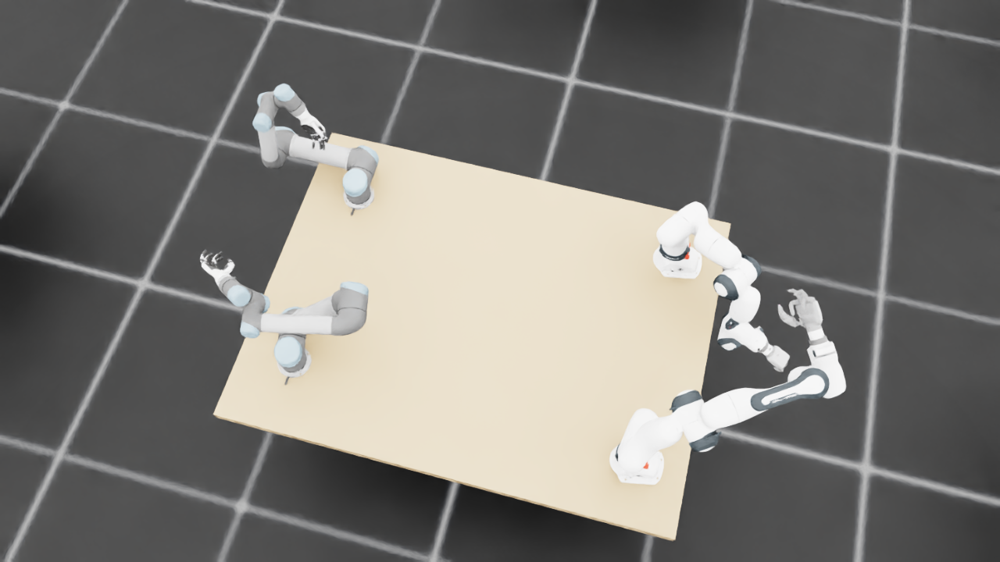
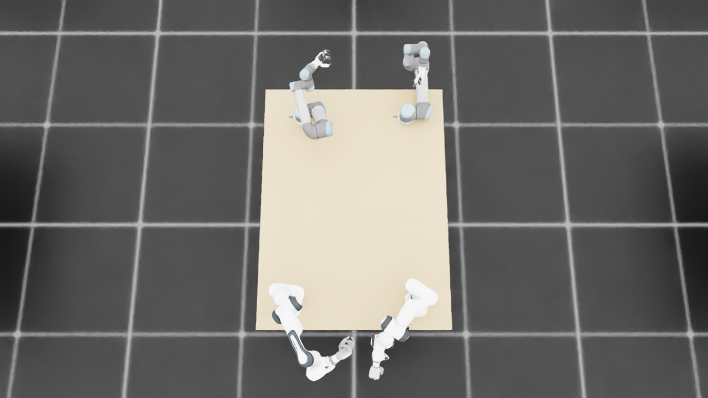
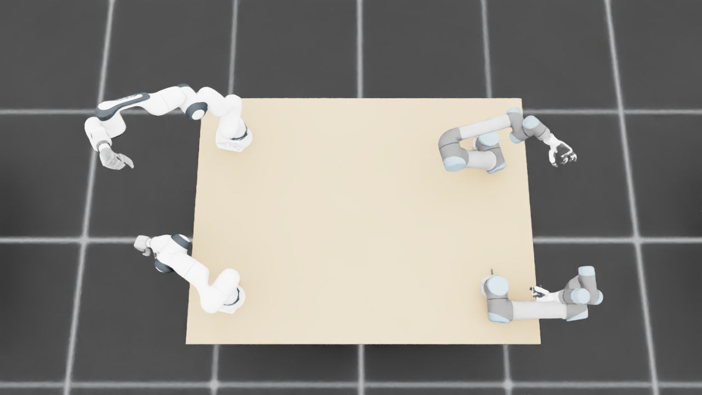
{
"qualified": true,
"arms": {
"F_L": {
"qualified": true,
"palm_visual_peak_pixels": 30360,
"finger_family_peak_pixels": {
"thumb": 10129,
"index": 4774,
"middle": 4484,
"ring": 3165,
"little": 2989
},
"per_native_body_peak_pixels": {
"/World/envs/env_17/F_L/f2_hand/left_hand_base": 36479,
"/World/envs/env_17/F_L/f2_hand/left_index_1": 2791,
"/World/envs/env_17/F_L/f2_hand/left_middle_1": 2608,
"/World/envs/env_17/F_L/f2_hand/left_pinky_1": 980,
"/World/envs/env_17/F_L/f2_hand/left_ring_1": 2447,
"/World/envs/env_17/F_L/f2_hand/left_thumb_1": 905,
"/World/envs/env_17/F_L/f2_hand/left_index_2": 2629,
"/World/envs/env_17/F_L/f2_hand/left_middle_2": 1876,
"/World/envs/env_17/F_L/f2_hand/left_pinky_2": 2044,
"/World/envs/env_17/F_L/f2_hand/left_ring_2": 1176,
"/World/envs/env_17/F_L/f2_hand/left_thumb_2": 5045,
"/World/envs/env_17/F_L/f2_hand/left_thumb_3": 2635,
"/World/envs/env_17/F_L/f2_hand/left_thumb_4": 2368
},
"native_body_visibility_gaps": [],
"all_native_hand_bodies_observed": true,
"full_mesh_coverage_certified": false,
"all_recorded_attempt_peak": {
"qualified": false,
"palm_visual_peak_pixels": 33375,
"finger_family_peak_pixels": {
"thumb": 10129,
"index": 4774,
"middle": 4484,
"ring": 3239,
"little": 2989
},
"per_native_body_peak_pixels": {
"/World/envs/env_17/F_L/f2_hand/left_hand_base": 40632,
"/World/envs/env_17/F_L/f2_hand/left_index_1": 2791,
"/World/envs/env_17/F_L/f2_hand/left_middle_1": 2608,
"/World/envs/env_17/F_L/f2_hand/left_pinky_1": 1153,
"/World/envs/env_17/F_L/f2_hand/left_ring_1": 2447,
"/World/envs/env_17/F_L/f2_hand/left_thumb_1": 905,
"/World/envs/env_17/F_L/f2_hand/left_index_2": 2629,
"/World/envs/env_17/F_L/f2_hand/left_middle_2": 1876,
"/World/envs/env_17/F_L/f2_hand/left_pinky_2": 2044,
"/World/envs/env_17/F_L/f2_hand/left_ring_2": 1176,
"/World/envs/env_17/F_L/f2_hand/left_thumb_2": 5045,
"/World/envs/env_17/F_L/f2_hand/left_thumb_3": 2635,
"/World/envs/env_17/F_L/f2_hand/left_thumb_4": 2368
},
"native_body_visibility_gaps": [],
"all_native_hand_bodies_observed": true,
"full_mesh_coverage_certified": false,
"qualification": false
},
"attempts": 4,
"decoded": 4
},
"F_R": {
"qualified": true,
"palm_visual_peak_pixels": 27521,
"finger_family_peak_pixels": {
"thumb": 9819,
"index": 4771,
"middle": 2740,
"ring": 3219,
"little": 3824
},
"per_native_body_peak_pixels": {
"/World/envs/env_17/F_R/f2_hand/right_hand_base": 33279,
"/World/envs/env_17/F_R/f2_hand/right_index_1": 3040,
"/World/envs/env_17/F_R/f2_hand/right_middle_1": 1889,
"/World/envs/env_17/F_R/f2_hand/right_pinky_1": 2150,
"/World/envs/env_17/F_R/f2_hand/right_ring_1": 1207,
"/World/envs/env_17/F_R/f2_hand/right_thumb_1": 977,
"/World/envs/env_17/F_R/f2_hand/right_index_2": 1731,
"/World/envs/env_17/F_R/f2_hand/right_middle_2": 1973,
"/World/envs/env_17/F_R/f2_hand/right_pinky_2": 1674,
"/World/envs/env_17/F_R/f2_hand/right_ring_2": 2012,
"/World/envs/env_17/F_R/f2_hand/right_thumb_2": 5134,
"/World/envs/env_17/F_R/f2_hand/right_thumb_3": 2478,
"/World/envs/env_17/F_R/f2_hand/right_thumb_4": 2163
},
"native_body_visibility_gaps": [],
"all_native_hand_bodies_observed": true,
"full_mesh_coverage_certified": false,
"all_recorded_attempt_peak": {
"qualified": false,
"palm_visual_peak_pixels": 27521,
"finger_family_peak_pixels": {
"thumb": 9819,
"index": 5041,
"middle": 2740,
"ring": 3256,
"little": 5183
},
"per_native_body_peak_pixels": {
"/World/envs/env_17/F_R/f2_hand/right_hand_base": 33279,
"/World/envs/env_17/F_R/f2_hand/right_index_1": 3040,
"/World/envs/env_17/F_R/f2_hand/right_middle_1": 1889,
"/World/envs/env_17/F_R/f2_hand/right_pinky_1": 3290,
"/World/envs/env_17/F_R/f2_hand/right_ring_1": 1502,
"/World/envs/env_17/F_R/f2_hand/right_thumb_1": 977,
"/World/envs/env_17/F_R/f2_hand/right_index_2": 2007,
"/World/envs/env_17/F_R/f2_hand/right_middle_2": 1973,
"/World/envs/env_17/F_R/f2_hand/right_pinky_2": 1893,
"/World/envs/env_17/F_R/f2_hand/right_ring_2": 2065,
"/World/envs/env_17/F_R/f2_hand/right_thumb_2": 5134,
"/World/envs/env_17/F_R/f2_hand/right_thumb_3": 2478,
"/World/envs/env_17/F_R/f2_hand/right_thumb_4": 2163
},
"native_body_visibility_gaps": [],
"all_native_hand_bodies_observed": true,
"full_mesh_coverage_certified": false,
"qualification": false
},
"attempts": 6,
"decoded": 6
},
"U_L": {
"qualified": true,
"palm_visual_peak_pixels": 6454,
"finger_family_peak_pixels": {
"thumb": 7155,
"index": 2442,
"middle": 2168,
"ring": 1907,
"little": 1979
},
"per_native_body_peak_pixels": {
"/World/envs/env_17/U_L/wrist_3_link": 22790,
"/World/envs/env_17/U_L/left_index_1": 1660,
"/World/envs/env_17/U_L/left_little_1": 990,
"/World/envs/env_17/U_L/left_middle_1": 928,
"/World/envs/env_17/U_L/left_ring_1": 802,
"/World/envs/env_17/U_L/left_thumb_1": 369,
"/World/envs/env_17/U_L/left_index_2": 782,
"/World/envs/env_17/U_L/left_little_2": 989,
"/World/envs/env_17/U_L/left_middle_2": 1240,
"/World/envs/env_17/U_L/left_ring_2": 1105,
"/World/envs/env_17/U_L/left_thumb_2": 4387,
"/World/envs/env_17/U_L/left_thumb_3": 1673,
"/World/envs/env_17/U_L/left_thumb_4": 803
},
"native_body_visibility_gaps": [],
"all_native_hand_bodies_observed": true,
"full_mesh_coverage_certified": false,
"all_recorded_attempt_peak": {
"qualified": false,
"palm_visual_peak_pixels": 11416,
"finger_family_peak_pixels": {
"thumb": 7690,
"index": 3239,
"middle": 2911,
"ring": 2520,
"little": 3143
},
"per_native_body_peak_pixels": {
"/World/envs/env_17/U_L/wrist_3_link": 33587,
"/World/envs/env_17/U_L/left_index_1": 2052,
"/World/envs/env_17/U_L/left_little_1": 1978,
"/World/envs/env_17/U_L/left_middle_1": 1425,
"/World/envs/env_17/U_L/left_ring_1": 1552,
"/World/envs/env_17/U_L/left_thumb_1": 369,
"/World/envs/env_17/U_L/left_index_2": 1244,
"/World/envs/env_17/U_L/left_little_2": 1165,
"/World/envs/env_17/U_L/left_middle_2": 1486,
"/World/envs/env_17/U_L/left_ring_2": 1413,
"/World/envs/env_17/U_L/left_thumb_2": 4561,
"/World/envs/env_17/U_L/left_thumb_3": 1992,
"/World/envs/env_17/U_L/left_thumb_4": 955
},
"native_body_visibility_gaps": [],
"all_native_hand_bodies_observed": true,
"full_mesh_coverage_certified": false,
"qualification": false
},
"attempts": 9,
"decoded": 9
},
"U_R": {
"qualified": true,
"palm_visual_peak_pixels": 9853,
"finger_family_peak_pixels": {
"thumb": 6566,
"index": 2383,
"middle": 2276,
"ring": 2140,
"little": 2497
},
"per_native_body_peak_pixels": {
"/World/envs/env_17/U_R/wrist_3_link": 30400,
"/World/envs/env_17/U_R/right_index_1": 1530,
"/World/envs/env_17/U_R/right_little_1": 1565,
"/World/envs/env_17/U_R/right_middle_1": 1149,
"/World/envs/env_17/U_R/right_ring_1": 1336,
"/World/envs/env_17/U_R/right_thumb_1": 276,
"/World/envs/env_17/U_R/right_index_2": 853,
"/World/envs/env_17/U_R/right_little_2": 932,
"/World/envs/env_17/U_R/right_middle_2": 1143,
"/World/envs/env_17/U_R/right_ring_2": 908,
"/World/envs/env_17/U_R/right_thumb_2": 3976,
"/World/envs/env_17/U_R/right_thumb_3": 1594,
"/World/envs/env_17/U_R/right_thumb_4": 733
},
"native_body_visibility_gaps": [],
"all_native_hand_bodies_observed": true,
"full_mesh_coverage_certified": false,
"all_recorded_attempt_peak": {
"qualified": false,
"palm_visual_peak_pixels": 13686,
"finger_family_peak_pixels": {
"thumb": 8798,
"index": 2383,
"middle": 2276,
"ring": 2140,
"little": 2497
},
"per_native_body_peak_pixels": {
"/World/envs/env_17/U_R/wrist_3_link": 37254,
"/World/envs/env_17/U_R/right_index_1": 1530,
"/World/envs/env_17/U_R/right_little_1": 1565,
"/World/envs/env_17/U_R/right_middle_1": 1149,
"/World/envs/env_17/U_R/right_ring_1": 1336,
"/World/envs/env_17/U_R/right_thumb_1": 276,
"/World/envs/env_17/U_R/right_index_2": 1091,
"/World/envs/env_17/U_R/right_little_2": 932,
"/World/envs/env_17/U_R/right_middle_2": 1143,
"/World/envs/env_17/U_R/right_ring_2": 908,
"/World/envs/env_17/U_R/right_thumb_2": 5104,
"/World/envs/env_17/U_R/right_thumb_3": 2284,
"/World/envs/env_17/U_R/right_thumb_4": 1207
},
"native_body_visibility_gaps": [],
"all_native_hand_bodies_observed": true,
"full_mesh_coverage_certified": false,
"qualification": false
},
"attempts": 4,
"decoded": 4
}
},
"wide": {
"qualified": true,
"per_native_object_peak_pixels": {
"/World/envs/env_17/F_L/fr3_link0": 1645,
"/World/envs/env_17/F_L/fr3_link1": 1868,
"/World/envs/env_17/F_L/fr3_link2": 1992,
"/World/envs/env_17/F_L/fr3_link3": 2969,
"/World/envs/env_17/F_L/fr3_link4": 3001,
"/World/envs/env_17/F_L/fr3_link5": 4524,
"/World/envs/env_17/F_L/fr3_link6": 1323,
"/World/envs/env_17/F_L/fr3_link7": 939,
"/World/envs/env_17/F_L/fr3_link8": 192,
"/World/envs/env_17/F_L/f2_hand/left_hand_base": 1188,
"/World/envs/env_17/F_L/f2_hand/left_index_1": 59,
"/World/envs/env_17/F_L/f2_hand/left_middle_1": 59,
"/World/envs/env_17/F_L/f2_hand/left_pinky_1": 115,
"/World/envs/env_17/F_L/f2_hand/left_ring_1": 65,
"/World/envs/env_17/F_L/f2_hand/left_thumb_1": 38,
"/World/envs/env_17/F_L/f2_hand/left_index_2": 98,
"/World/envs/env_17/F_L/f2_hand/left_middle_2": 93,
"/World/envs/env_17/F_L/f2_hand/left_pinky_2": 89,
"/World/envs/env_17/F_L/f2_hand/left_ring_2": 109,
"/World/envs/env_17/F_L/f2_hand/left_thumb_2": 189,
"/World/envs/env_17/F_L/f2_hand/left_thumb_3": 75,
"/World/envs/env_17/F_L/f2_hand/left_thumb_4": 60,
"/World/envs/env_17/F_R/fr3_link0": 1920,
"/World/envs/env_17/F_R/fr3_link1": 1984,
"/World/envs/env_17/F_R/fr3_link2": 3443,
"/World/envs/env_17/F_R/fr3_link3": 2431,
"/World/envs/env_17/F_R/fr3_link4": 2374,
"/World/envs/env_17/F_R/fr3_link5": 414,
"/World/envs/env_17/F_R/fr3_link6": 1503,
"/World/envs/env_17/F_R/fr3_link7": 359,
"/World/envs/env_17/F_R/fr3_link8": 76,
"/World/envs/env_17/F_R/f2_hand/right_hand_base": 651,
"/World/envs/env_17/F_R/f2_hand/right_index_1": 13,
"/World/envs/env_17/F_R/f2_hand/right_middle_1": 8,
"/World/envs/env_17/F_R/f2_hand/right_pinky_1": 22,
"/World/envs/env_17/F_R/f2_hand/right_ring_1": 5,
"/World/envs/env_17/F_R/f2_hand/right_thumb_1": 12,
"/World/envs/env_17/F_R/f2_hand/right_index_2": 42,
"/World/envs/env_17/F_R/f2_hand/right_middle_2": 2,
"/World/envs/env_17/F_R/f2_hand/right_pinky_2": 28,
"/World/envs/env_17/F_R/f2_hand/right_ring_2": 0,
"/World/envs/env_17/F_R/f2_hand/right_thumb_2": 97,
"/World/envs/env_17/F_R/f2_hand/right_thumb_3": 15,
"/World/envs/env_17/F_R/f2_hand/right_thumb_4": 23,
"/World/envs/env_17/U_L/base_link": 387,
"/World/envs/env_17/U_L/shoulder_link": 1628,
"/World/envs/env_17/U_L/upper_arm_link": 6134,
"/World/envs/env_17/U_L/forearm_link": 2045,
"/World/envs/env_17/U_L/wrist_1_link": 770,
"/World/envs/env_17/U_L/wrist_2_link": 1302,
"/World/envs/env_17/U_L/wrist_3_link": 773,
"/World/envs/env_17/U_L/left_index_1": 64,
"/World/envs/env_17/U_L/left_little_1": 43,
"/World/envs/env_17/U_L/left_middle_1": 27,
"/World/envs/env_17/U_L/left_ring_1": 31,
"/World/envs/env_17/U_L/left_thumb_1": 19,
"/World/envs/env_17/U_L/left_index_2": 36,
"/World/envs/env_17/U_L/left_little_2": 32,
"/World/envs/env_17/U_L/left_middle_2": 33,
"/World/envs/env_17/U_L/left_ring_2": 35,
"/World/envs/env_17/U_L/left_thumb_2": 203,
"/World/envs/env_17/U_L/left_thumb_3": 56,
"/World/envs/env_17/U_L/left_thumb_4": 25,
"/World/envs/env_17/U_R/base_link": 444,
"/World/envs/env_17/U_R/shoulder_link": 1626,
"/World/envs/env_17/U_R/upper_arm_link": 4666,
"/World/envs/env_17/U_R/forearm_link": 4380,
"/World/envs/env_17/U_R/wrist_1_link": 820,
"/World/envs/env_17/U_R/wrist_2_link": 1209,
"/World/envs/env_17/U_R/wrist_3_link": 1285,
"/World/envs/env_17/U_R/right_index_1": 39,
"/World/envs/env_17/U_R/right_little_1": 67,
"/World/envs/env_17/U_R/right_middle_1": 56,
"/World/envs/env_17/U_R/right_ring_1": 53,
"/World/envs/env_17/U_R/right_thumb_1": 21,
"/World/envs/env_17/U_R/right_index_2": 41,
"/World/envs/env_17/U_R/right_little_2": 47,
"/World/envs/env_17/U_R/right_middle_2": 55,
"/World/envs/env_17/U_R/right_ring_2": 48,
"/World/envs/env_17/U_R/right_thumb_2": 201,
"/World/envs/env_17/U_R/right_thumb_3": 69,
"/World/envs/env_17/U_R/right_thumb_4": 29,
"/World/envs/env_17/TableF": 125933,
"/World/envs/env_17/TableU": 121392
},
"arm_peak_pixels": {
"F_L": 18701,
"F_R": 12836,
"U_L": 13019,
"U_R": 14106
},
"table_peak_pixels": {
"TableF": 125933,
"TableU": 121392
},
"critical_body_peak_pixels": {
"/World/envs/env_17/U_L/forearm_link": 2045,
"/World/envs/env_17/U_L/wrist_2_link": 1302,
"/World/envs/env_17/U_R/forearm_link": 4380,
"/World/envs/env_17/U_R/wrist_2_link": 1209
}
},
"raw_attempt_count": 34,
"PNG_count": 34,
"angle_records": 34,
"max_actual_angle_identity_error_deg": 0.0,
"held_snapshot_checks": 588,
"universal_visibility_impossible": false,
"full_mesh_coverage_certified": false
}